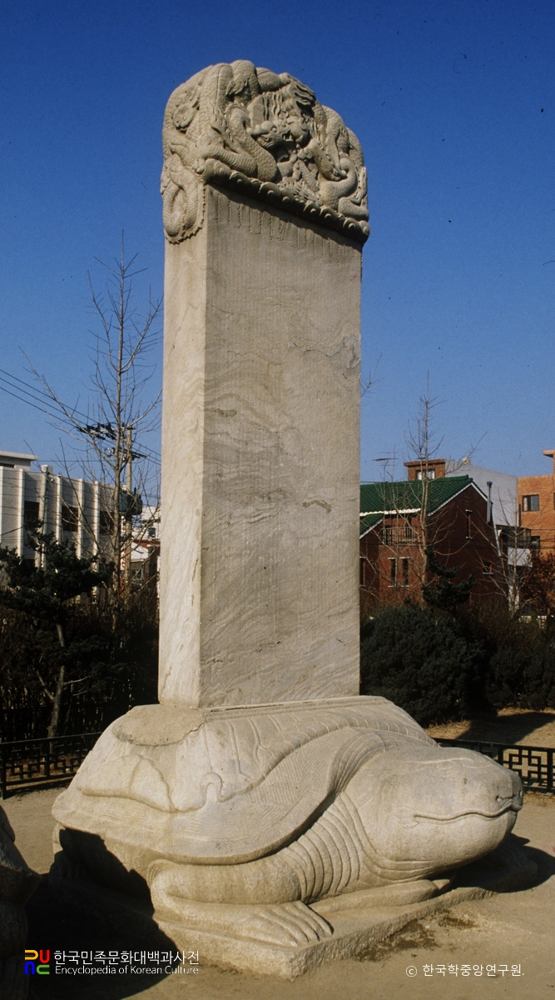

병자호란
"삼전도의 굴욕, 명·청 교체기의 소용돌이 속에서 맞이한 조선의 비극"

- 정의: 1636년(인조 14) 12월, 국호를 '청(淸)'으로 바꾼 여진족이 조선을 침략하여 발생한 두 번째 호란 (1차는 1627년 정묘호란).
- 결과: 조선의 패배로 끝나며 현실적으로는 '대청 사대(對淸 事大)' 질서에 편입되었으나, 사상적으로는 '대명 의리(對明 義理)'와 '북벌론'이 조선 후기를 지배하는 계기가 됨.
- 기간: 1636년 ~ 1637년
1. 전쟁의 배경: 광해군의 실리외교 vs 인조반정의 명분론
- 임진왜란 이후 국력이 쇠퇴한 명나라와 만주에서 급성장한 후금(누르하치) 사이에서 어느 한쪽에 치우치지 않는 중립외교를 펼침.
- 명의 원병 요청에 강홍립을 파견하되 상황에 따라 대처하게 하여 후금과의 전면전을 피함.
- 서인과 남인 세력이 광해군의 중립외교와 반인륜적 행위(계축옥사)를 명분 삼아 인조반정을 일으킴.
- 성리학적 의리론에 따라 후금을 오랑캐로 배척하고 명나라를 섬기는 친명배금 정책으로 선회하여 후금을 자극함.
- 후금 태종이 3만 군사로 조선을 침략. 조선은 강화도로 피난함. 후금 역시 명나라와의 전쟁 부담으로 장기전을 피하고자 조선과 '형제지맹(兄弟之盟)'을 맺고 철수함.
광해군의 중립외교 (실리 추구)
인조반정(1623년)과 친명배금(親明排金) 정책
1차 충돌: 정묘호란 (1627년)
2. 병자호란의 발발과 전개 과정 (12만의 대침공)
- 만주와 내몽고를 장악한 후금은 국호를 '청(淸)'으로 고치고 태종이 황제에 오름.
- 청나라는 조선에 '형제'가 아닌 '임금과 신하의 관계(군신지의)'를 요구함. 조선 조정은 김상헌, 정온 등 '척화주전론(전쟁을 불사함)'이 우세하여 청의 요구를 단호히 거절함.
- 1636년 12월, 청 태종이 12만 대군을 이끌고 직접 침공(친정). 청군은 백마산성의 임경업 등 조선의 북방 방어선을 무시하고 수도 한성을 향해 곧바로 직진하는 전술을 구사함.
- 압록강을 건넌 지 불과 10여 일 만에 청 선봉대가 서울에 육박하자, 인조는 강화도로 피난하려 했으나 길목이 차단됨. 결국 남한산성으로 긴급히 피난하여 고립됨.
- 성내 군사 1만 3천 명, 식량은 겨우 50일 분량인 상태에서 혹한과 굶주림 속에 40여 일을 버팀. 외곽에서 오던 관군의 구원병들은 모두 청군에 패배함.
- 1637년 1월 22일, 세자빈과 왕족들이 피난해 있던 강화도가 청군에 의해 함락당하고 왕족들이 포로로 잡힘. 이 소식이 남한산성에 전해지자 인조는 결국 항복을 결심함.
청나라의 군신(君臣) 관계 요구와 척화론
청군의 초고속 진격과 남한산성 고립
남한산성의 항전과 강화도 함락
3. 삼전도의 굴욕과 항복 조건 (삼배구고두)
- 삼전도의 비극 (1637년 1월 30일): 인조가 남한산성에서 나와 한강 변 삼전도에서 청 태종을 향해 세 번 절하고 아홉 번 머리를 조아리는 굴욕적인 '삼배구고두(三拜九叩頭)' 의례를 행함. 이후 청 태종의 공덕을 기리는 '삼전도비'가 세워짐.
- 명나라와의 관계를 완전히 끊고 청나라와 군신(君臣) 관계를 맺을 것.
- 소현세자와 봉림대군(훗날 효종), 그리고 대신들의 아들을 청나라에 인질로 보낼 것.
- 청나라가 명나라를 공격할 때 조선의 군대(수군 및 포수)와 군량을 지원할 것.
- 청군이 잡아가는 조선인 포로 중 도망친 자는 다시 잡아 보낼 것
- 향후 성곽을 새로 쌓거나 보수하지 말 것.
굴욕적인 항복 조약 (정묘약조보다 훨씬 가혹함)
4. 전쟁의 결과 및 역사적 영향
- 수많은 조선인(종실, 사대부, 일반 백성)이 청나라 심양으로 포로로 끌려감. 가족을 찾기 위해 막대한 몸값(속가)을 지불해야 해 파산하는 가정이 속출함.
- 특히 속환되어 돌아온 사대부 여성들을 '정절을 잃었다'며 사회적으로 비난하고 이혼을 요구하는 등 심각한 사회문제가 발생함 (환향녀의 비극).
- 항복 조건에 따라 조선은 가도 공격(1637), 금주 전투(1640~1641) 등에 군사를 파병함.
- 당시 지휘관이었던 임경업 등은 명나라에 대한 의리 때문에 공포탄을 쏘거나 전투를 회피하는 양면책을 썼으나, 결국 명이 멸망한 후 국제 정세 변화 속에서 비참한 죽음을 맞이함.
- 북벌론의 대두: 청나라에 인질로 잡혀갔다 돌아와 즉위한 효종은 청나라에 복수하고 명나라의 은혜를 갚자는 '북벌(北伐)'을 국가 최고 시책으로 추진함.
- 이데올로기의 형성: 비록 숙종 대에 이르러 군사적 북벌은 폐기되지만, '대명 의리'는 조선 후기 사회를 지배하는 핵심 유교 이데올로기로 남음. 삼학사(오달제, 윤집, 홍익한) 등은 성리학적 충절의 표본으로 추앙받게 됨.
막대한 인적·물적 피해와 '환향녀' 문제
명·청 전쟁에 조선군 강제 동원
사상적 변화: 북벌론(北伐論)과 대명의리의 고착화